Blender · three.js · materials engineering · 2026-10
Which Material Makes the Lightest Part That Is Just as Stiff, and What Does It Cost the Planet?
A materials library you can break, on 44 synthetic records: a 0.5 m beam stiff enough for 2,000 N·m² needs 18.5 mm of carbon steel (1.34 kg, 2.55 kgCO₂e) or 24.3 mm of aluminium 6061 (0.80 kg but 6.53 kgCO₂e). Pick a material from the constellation and it travels into a virtual machine that stretches, bends or strikes it, and the graph grows out of the machine's gauge.
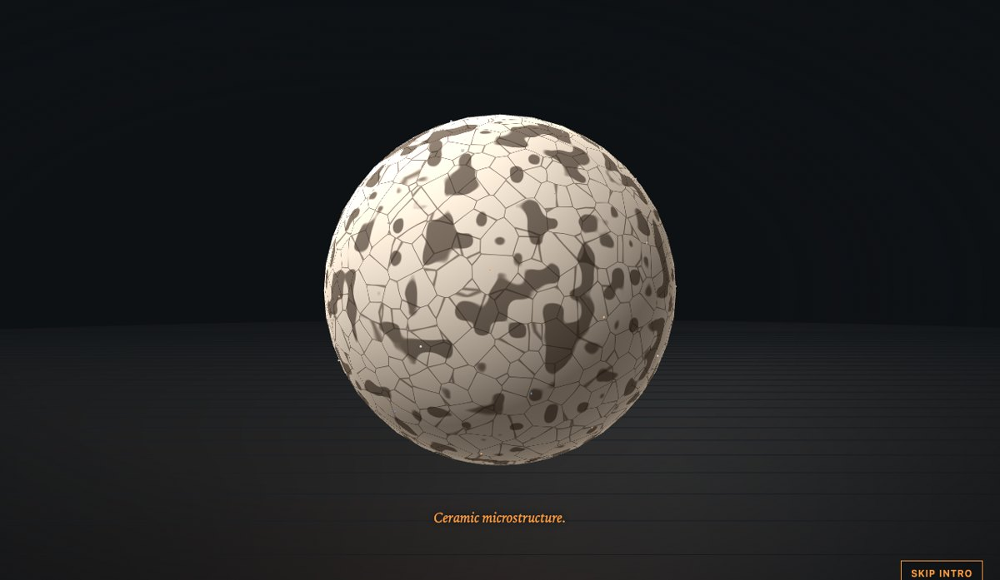
Built from blueprint 09 of a written build book (Advanced Engineering Build Book, Volume VII) as one vertical slice. Every material record and supplier is synthetic, and the tests are simplified models: not datasheet values and not a test report. The records are rounded, handbook-order numbers; the virtual tests are the formulas described below. One synthetic supplier is labelled Sponsored to show how a sponsored catalogue would be marked; it is not a real sponsorship. Not built: PostgreSQL and vector search, real or licensed data, anisotropy, temperature-dependent properties, finite element tests, dragging the 3D camera, touch testing beyond a phone layout, and a measurement on a physical GPU. The twelve agent roles are committed as Claude Code configuration, but this repository was produced by one session playing them in sequence, not by parallel subagents.
01 — The problem
Material selection tools are tables. The interesting questions are relational: which material wins if I care about strength and carbon but not cost, what happens if I make the part out of it, and what does the part weigh once it has to be stiff enough? Can the same library answer by moving things around, and can a test be something you watch a specimen go through?
The book's rule for this volume is that Blender provides the specimens and a modular test machine, and the browser's shaders own the surface and the deformation. So the specimens have to promise enough geometry for a vertex shader to stretch, neck, break and bend them, and the test models have to be real enough to check.
02 — What I built
One repository with the asset pipeline, the library and its tests, and the interface.
- A scripted kit: a universal test machine with a crosshead, grips, a dial and a display, a bending rig, an impact pendulum, a tensile coupon, a lattice block, a six-ply panel and a ceramic bar: 35 named parts, 5,404 triangles in 291 KB, validated by re-import.
- A library module: 44 records in six families, log-normalised axes, weighted ranking, a constellation layout, process suitability rules and suppliers.
- Three virtual tests: tensile, three-point bending and a Charpy-style impact, plus an equal-stiffness beam comparison.
- Six views: universe, compare, test chamber, processes, footprint and detail.
- An API with the book's five endpoints, plus footprint and shortlists.
03 — How it was built
- 01
Weights that move the stars
Each property is normalised across the library on a log scale, so a 2.8 times cost difference and a 10 times conductivity difference weigh fairly. A star's x is the weighted mean of strength, stiffness and fatigue, y of lightness, low carbon and low cost, z of conductivity; a few relaxation steps keep stars apart. Changing a weight reorders the list and moves the stars with springs. The Low carbon preset puts bamboo, oak and cross-laminated spruce first; Light and stiff puts unidirectional carbon fibre first.
- 02
A test that is a curve first
The tensile model is linear to yield, concave to the ultimate strength, then necking to fracture; brittle records are linear to UTS over E. A test pins it: the first slope equals the modulus, the peak equals the tensile strength, fracture is at the elongation. Aluminium 6061 yields at 212 MPa, peaks at 310 and absorbs 33.3 MJ/m³; alumina breaks at 0.08 percent strain and absorbs 0.12.
epsilon_f = UTS / E // brittle: linear to fracture k = 48 * E * I / L^3 // three-point bending stiffness - 03
The shader does the breaking
The coupon's gauge is a dense cylinder (49 rings of 24). A vertex shader stretches it with the bottom fixed, narrows it around a neck, and at fracture opens a gap and tapers the broken ends; triangles that straddle the break are discarded. The bar bends with the three-point deflection shape and splits at midspan when brittle. Stiff specimens barely move, so their movement is magnified and the panel says by how much.
- 04
Cold steel
Impact energy is toughness times an effective volume, reduced below a record's ductile-to-brittle transition and capped by the pendulum's 135 J. Carbon steel 1020 absorbs 74.1 J at 20 degrees and 8.6 J at minus 60; aluminium has no transition and absorbs 26.7 J at both; alumina absorbs 0.05 J.
- 05
A sphere that never rendered
The first intro showed a grey sphere that never heated: shader uniforms updated through the object passed to
<shaderMaterial uniforms>never reached the GPU. A debug shader that printed the uniforms as a colour showed black. Setting them through the material's ownuniformsfixed it, and a test now checks mid-intro that heat and melt are above zero.
04 — Results
The intro: a sphere of metal melts, crystallises, morphs through four microstructures, flashes six property labels and divides into the constellation.
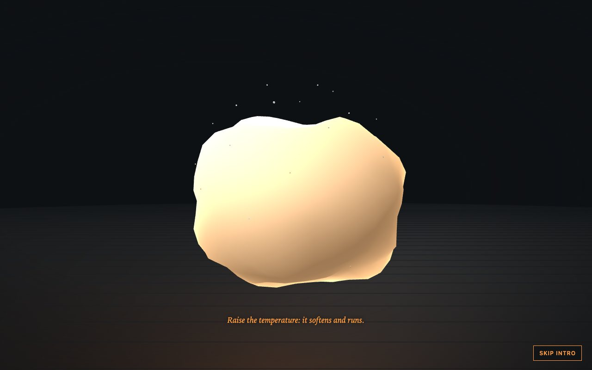
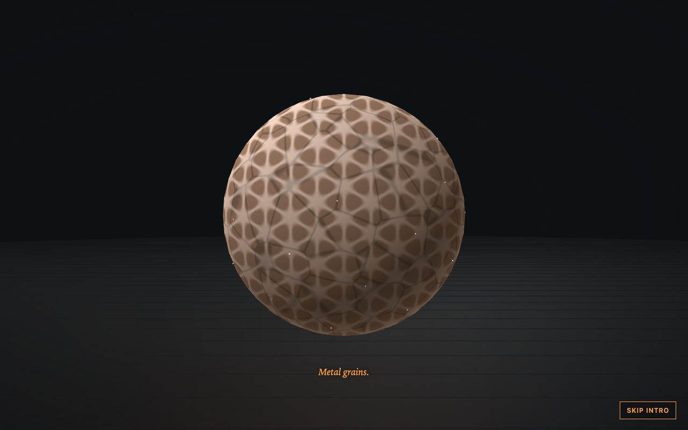
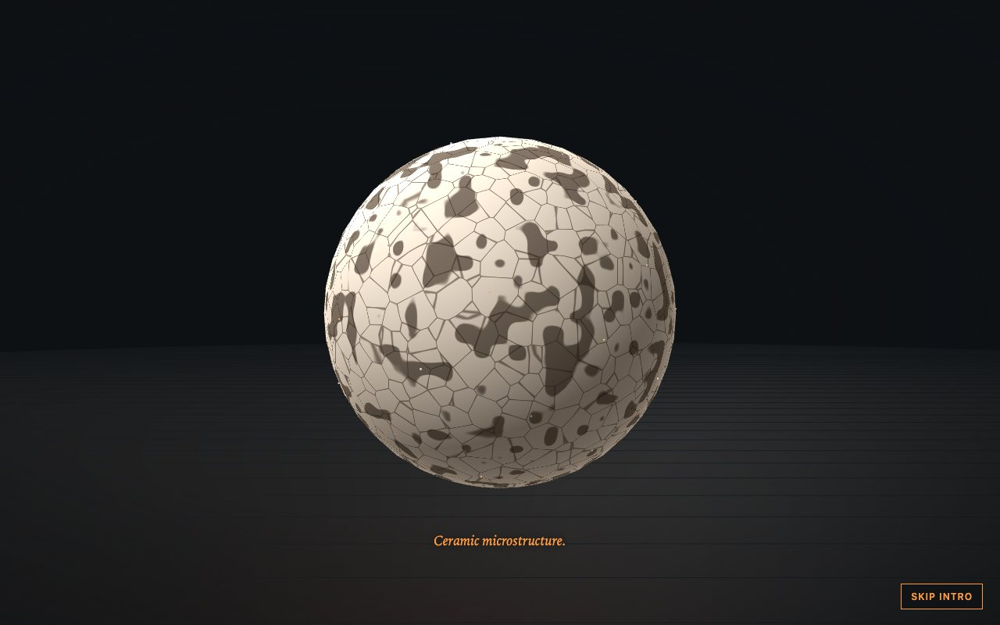
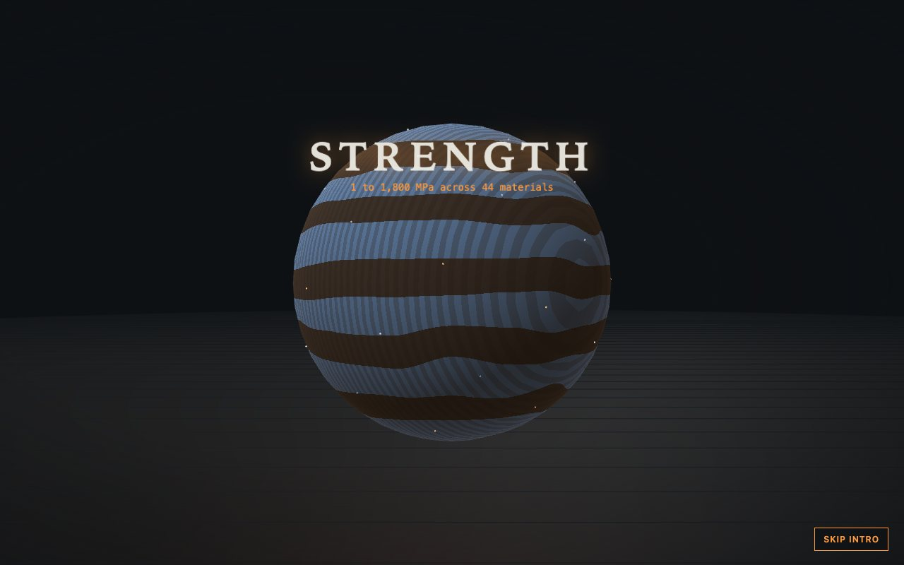
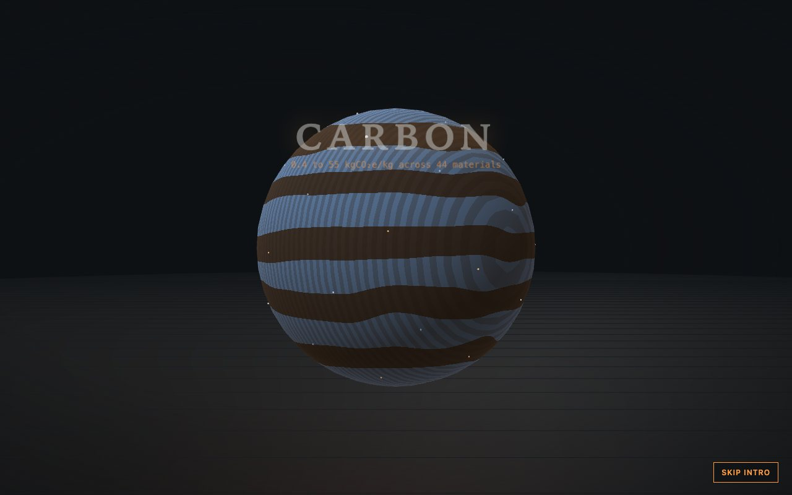
The library:
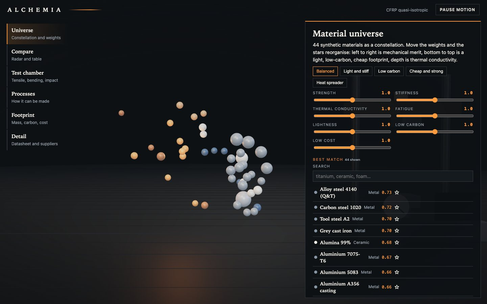
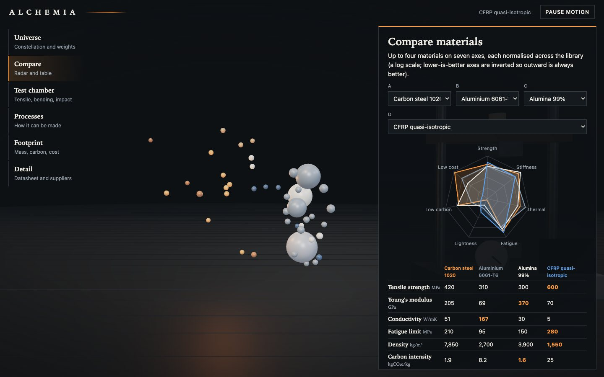
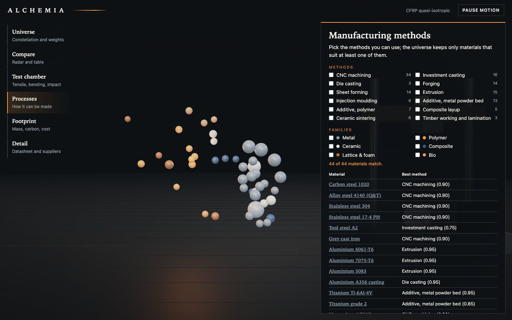
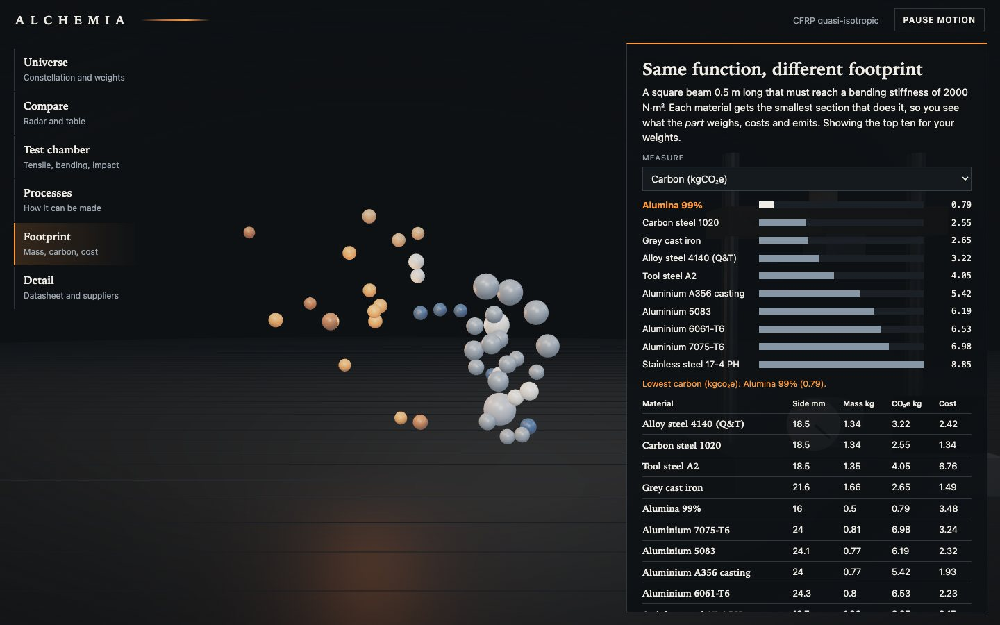
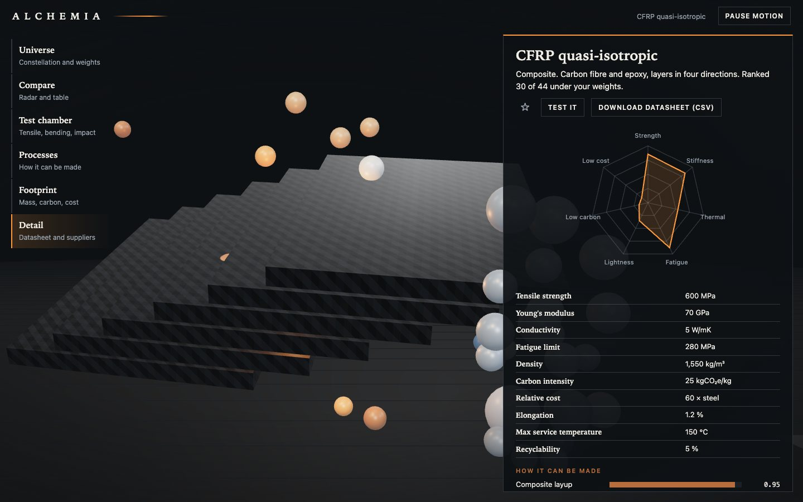
The test chamber:
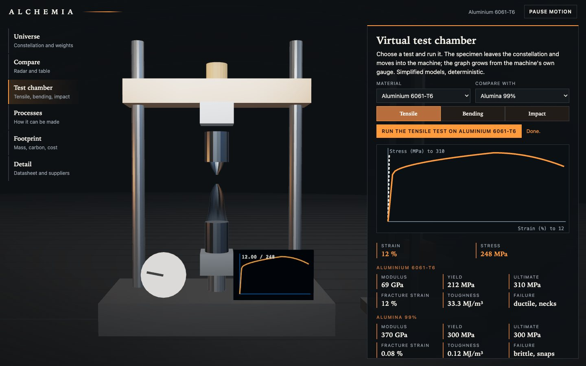
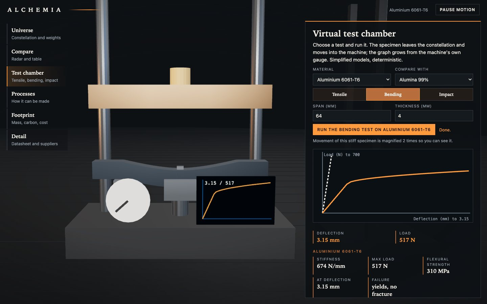
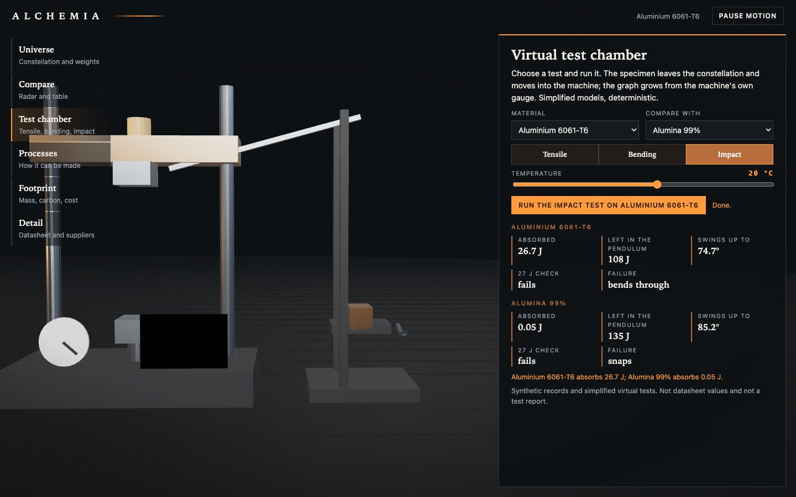
The numbers. Beam of 0.5 m with a bending stiffness of 2,000 N·m²: carbon steel 18.5 mm square, 1.34 kg, 2.55 kgCO₂e; aluminium 6061 24.3 mm, 0.80 kg, 6.53 kgCO₂e; Ti-6Al-4V 1.02 kg and 35.6 kgCO₂e; CFRP quasi-isotropic 0.45 kg, 11.3 kgCO₂e; cross-laminated spruce 0.33 kg, 0.13 kgCO₂e. Lowest mass, carbon and cost in the library all go to the spruce.
Checks. 32 unit and API tests, 26 Playwright tests that passed three times in a row after the last fix, a clean typecheck. They cover the demo script, the intro's mid-melt and end states, shortlists across a reload, manufacturing filters, the compare radar, bending and impact parameters, footprint, the CSV datasheet download, reduced motion, graphics failure, context loss, a phone width and six visual-regression states.
Performance, measured on an Apple M3 Pro with software WebGL, not a GPU. 16 draw calls and 21,168 triangles in the universe view, 504 KB transferred, a 4.8 s largest contentful paint and a median 33 ms frame (p95 67 ms); there is no 60 fps claim here.
05 — What I'd do next
- Measure on a physical GPU and a phone.
- Replace the synthetic records with an adapter for a licensed dataset, keeping the scoring and tests unchanged.
- Add temperature-dependent properties and anisotropy for the composites.
- Let the visitor drag the specimen's camera and pick stars directly in 3D with a lasso.